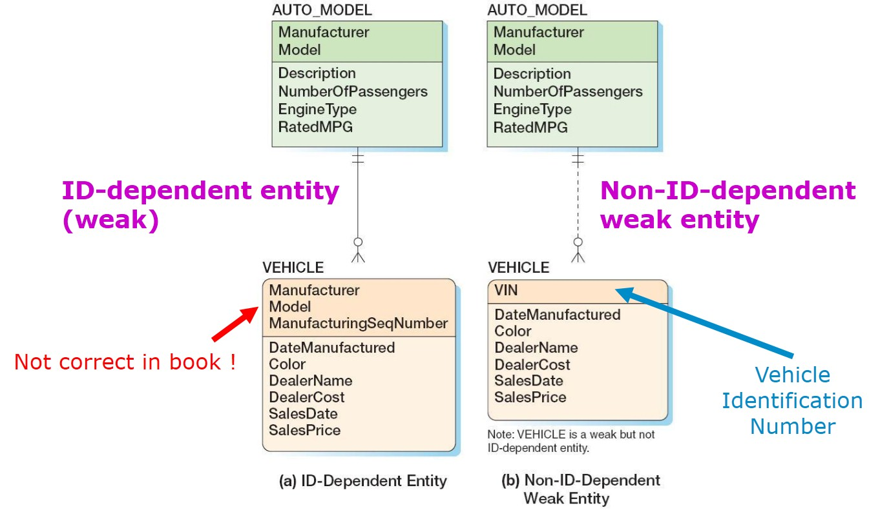

Databases
Data Modeling with the Entity-Relationship Model
The Entity-Relationship (ER) Model
A Data Model
- A data model is a plan or blueprint for a database design.
- A data model is more generalized and abstract than a database design.
- It is easier to change a data model then it is to change a database design, so it is the appropriate place to work through conceptual database problems.
The Entity-Relationship (ER) Model
- Entity-Relationship model is a set of concepts and graphical symbols that can be used to create conceptual schemas.
- Versions
- Original E-R model - by Peter Chen (1976).
- Extended E-R model - extensions to the Chen model.
- Information Engineering (IE) - by James Martin (1990), it uses "crow's foot" notation.
- IDEF1X - a national standard developed by the National Institute of Standards and Technology.
- Unified Modeling Language (UML) - by the Object Management Group, it supports object-oriented methodology.
The Entity-Relationship (ER) Model
- An entity is something that can be identified and the user wants to track
- An entity class is a collection of entities of a given type.
- An entity instance is the occurrence of a particular entity.
- Example

- Entity class: cartoon figures
- Entity instance: "Willy Wortel"
Entity classes and instances
Attributes
- Attributes describe an entity's characteristics.
- All entity instances of a given entity class have the same attributes, but vary in the values of those attributes.
- Originally shown in data models as ellipses.
- Data modeling products today commonly show attributes in rectangular form.

Identifiers
- Identifiers are attributes that name, or identify, entity instances.
- The identifier of an entity instance consists of one or more of the entity's attributes.
- Composite identifiers are identifiers that consist of two or more attributes.
- Identifiers in data models become keys in database designs
- Entities have identifiers
- Relations have keys
Identifiers
Relationships / Associations
Associations
- Entities can be associated with one another in relationships (also referred to as associations)
- A relationship class can involve two or more entity classes.
- The degree of the relationship is the number of entity classes in the relationship:
- Two entities have a binary relationship of degree two.
- Three entities have a ternary relationship of degree three.
Degree of the relationship
- Binary relationship
- Ternary relationship
Entities versus Relations
- The principle difference between an entity and a relation (table) is that you can express a relationship between entities without using foreign keys.
- This makes it easier to work with entities in the early design process where the very existence of entities and the relationships between them is uncertain.
Cardinality
- Cardinality means "count" and is expressed as a number.
- Maximum cardinality is the maximum number of entity instances that can participate in a relationship.
- Minimum cardinality is the minimum number of entity instances that must participate in a relationship.
Maximum Cardinality
- One-to-one relationship
- Employee can have a maximum of one badge
- A badge can be assigned to maximum one employee
Maximum Cardinality
- One-to-many relationship
- Employee can have many computers
- A computer can be assigned to maximum one employee
Maximum Cardinality
- many-to-many relationship
- Employee can have many skills
- A skill can be assigned to many employees
Maximum Cardinality
- So in conclusion
- There are three types of maximum cardinality
- One-to-One [1:1]
- One-to-Many [1:N]
- Many-to-Many [N:M]
- There are three types of maximum cardinality
Minimum Cardinality
- Minimum cardinality is the minimum number of entity instances that must participate in a relationship.
- Minimums are generally stated as either zero or one:
- If zero [0] then participation in the relationship by the entity is optional, and no entity instance must participate in the relationship.
- If one [1] then participation in the relationship by the entity is mandatory, and at least one entity instance must participate in the relationship.
Minimum Cardinality
- Minimum cardinality of zero [0] indicating optional participation is indicated by placing an oval (O) next to the optional entity.
- Minimum cardinality of one [1] indicating mandatory (required) participation is indicated by placing a vertical hatsh mark (|) next to the required entity.
Minimum Cardinality
- Mandatory-to-mandatory relationship
- Maximum cardinality
- Employee can have a maximum of one badge
- A badge can be assigned to maximum one employee
- Minimum cardinality
- Employee must have a badge
- A badge must be assigned to an employee
Minimum Cardinality
- Optional-to-optional relationship
- Maximum cardinality
- Employee can have many computers
- A computer can be assigned to maximum one employee
- Minimum cardinality
- Employee may have a computer
- A computer may be assigned to an employee
Minimum Cardinality
- Optional-to-mandatory relationship

- Maximum cardinality
- Employee can have many skills
- A skill can be assigned to many employees
- Minimum cardinality
- Employee must have a skill
- A skill can be assigned to an employee
Information Engineering (IE)
- Uses "crow's foot" notation.
- Many-to-many, optional-to-mandatory relationship
"crow's foot" notation
ID-Dependent Entities
- An ID-dependent entity is an entity (child) whose identifier includes the identifier of another entity (parent).
- The ID-dependent entity is a logical extension or subunit of the parent.
- The minimum cardinality from the ID-dependent entity to the parent is always one.
- In other words: the child entity can not exists without the parent entity.
ID-Dependent Entities
ID-Dependent Entities
Weak Entities
- A weak entity is an entity whose existence depends upon another entity.
- All ID-Dependent entities are considered weak.
- There are also non-ID-dependent weak entities.
- The identifier of the parent does not appear in the identifier of the weak child entity.
Weak Entities

Weak Entities
Has-A associations
- The associations we have been discussing are known as HAS-A associations.
- Each entity instance has a associations with another entity instance.
- An EMPLOYEE has one or more COMPUTERs.
- A COMPUTER has an assigned EMPLOYEE.
Subtype Entities
- A subtype entity is a special case of a supertype entity.
- The supertype contains all common attributes, while the subtypes contain specific attributes.
- The supertype may have a discriminator attribute which indicates the subtype.
Subtype Entities
Subtypes: Exclusive or Inclusive
- If subtypes are exclusive, one supertype relates to at most one subtype.
- If subtypes are inclusive, one supertype can relate to one or more subtypes.
Exclusive Subtype Entities
Inclusive Subtype Entities
Subtypes - IS-A
- Associations connecting supertypes and subtypes are called IS-A associations, because a subtype IS A supertype.
- The identifier of the supertype and all of its subtypes must be identical
- The identifier of the supertype becomes the identifier of the related subtype(s).
- Subtypes are used to avoid value-inappropriate NULLs (attributes that have an empty value).